This example demonstrates generation and analysis of FSK modulated signals. You can specify transmit filter parameters, Eb/No, and frequency offset. This example demonstrates programming techniques for resetting the transmitter in cases where the receiver (demodulator) lock is lost. You can also view results of the demodulation on an eye diagram and perform measurements such as bit error rate.
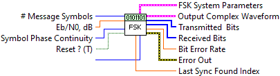
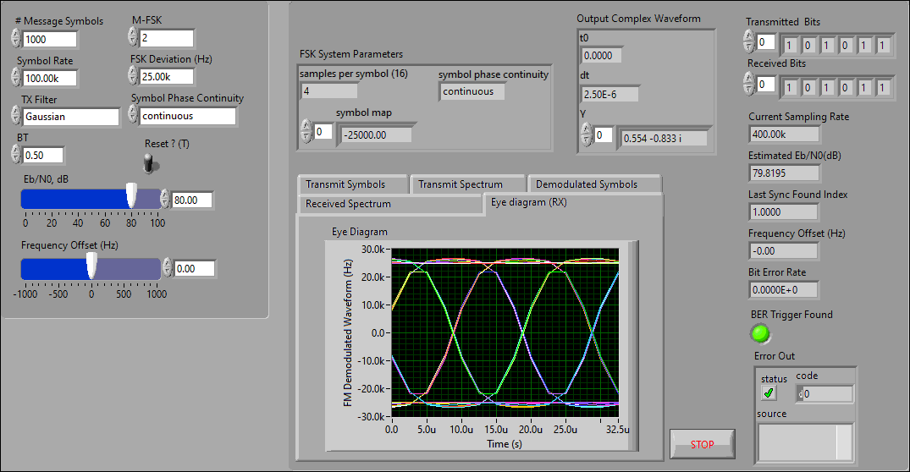
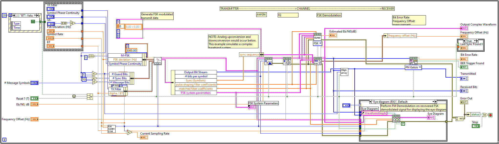
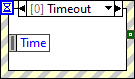
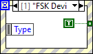
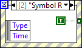
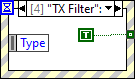
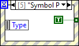
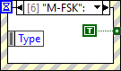
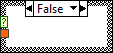
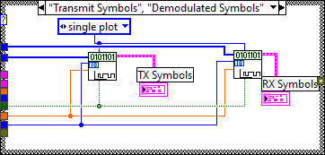
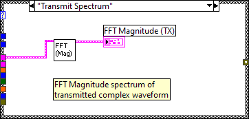